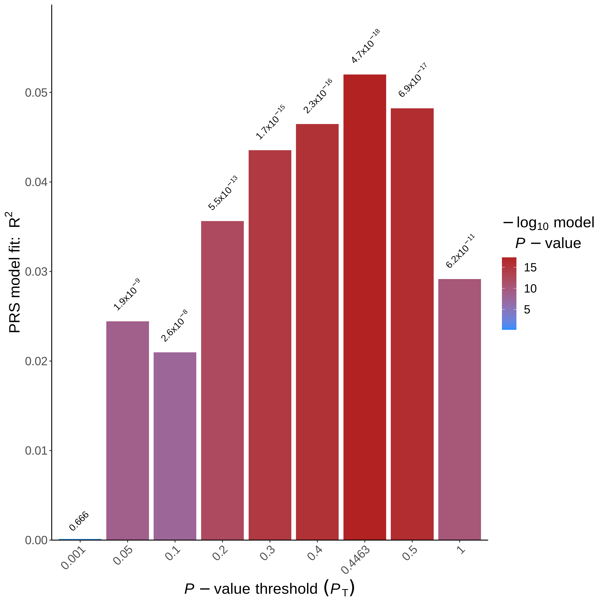
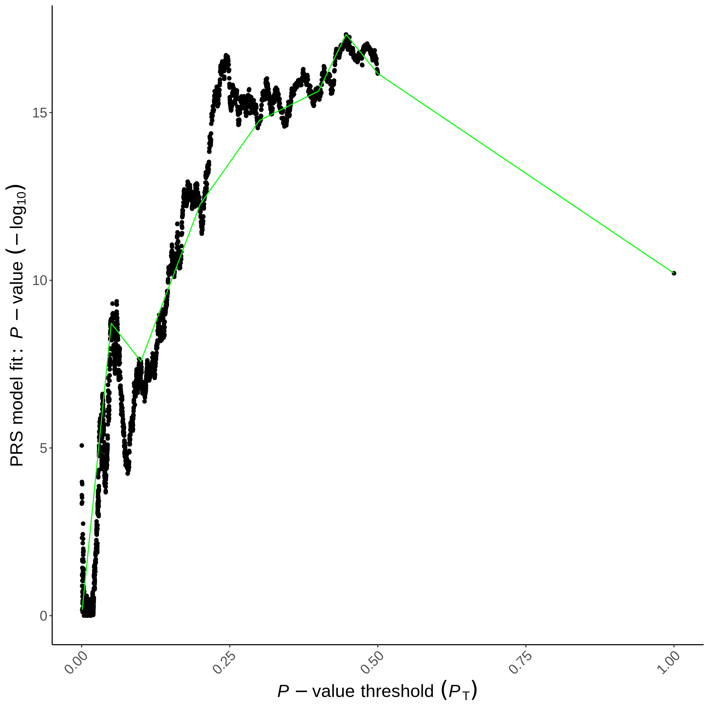

mkdir -p Results/GWAS6
# Create two links to data and software
ln -sf ../Data
ln -sf ../SoftwarePolygenic Score analysis
Important notes for this notebook
Polygenic scores (PRS) estimate an individual’s genetic predisposition to complex traits or diseases by combining information from multiple genetic variants previously identified in the GWAS study. This notebook provides a step-by-step guide to performing a basic PRS analysis using PRSice and explains how to interpret the results.
Learning outcomes
- Discuss and choose the PRS equation
- Discuss PRS scores and biases
How to make this notebook work
- In this notebook, we will only use the
bash command line. Be sure to click on the menuKernel --> Change Kernel --> Bash
 Choose the Bash kernel
Choose the Bash kernel
While most individual associations found in GWAS studies are of small effect, information about them can be combined across the genome, to create a polygenic score (PGS). These scores can be used to make genome-based predictions about the overall risk of having a particular trait or disease or about the genetic value for continuous traits. If the prediction is on a discrete phenotype such as a disease, these scores are known as polygenic risk scores (PRS).
1. Conducting polygenic risk prediction analyses
Single-variant association analysis has been the foundation of GWAS. However, detecting more than a handful of significant SNPs for many complex traits requires extremely large sample sizes. In contrast, PGS aggregate genetic risk across multiple variants into a single polygenic score for a given trait.
A PGS is typically calculated by summing the allele frequencies of statistically significant trait-associated variants, weighted by their effect sizes, while ensuring independence among them (e.g., via LD pruning). These effect sizes—betas for continuous traits and log odds ratios for binary traits—are obtained from a discovery GWAS. Large discovery samples (also known as base or training samples) are needed for accurate estimates, but if the target sample shares ancestry, effect sizes from larger studies can be leveraged. A target sample of ~2,000 individuals may be sufficient to detect meaningful genetic contributions to trait variance (Dudbridge 2013). For many complex traits, SNP effect sizes are publicly available (e.g., see https://www.nealelab.is/uk-biobank, https://www.med.unc.edu/pgc/downloads or https://www.ebi.ac.uk/gwas/).
A common practice to calculate PRS involves clumping GWAS results using p-value thresholds (e.g., p < 0.05) to exclude poorly associated SNPs. Usually, multiple PRS analyses will be performed, with varying thresholds for the p-values of the association test.
Once PRS are calculated, they are used in (logistic) regression models to assess the contribution to the trait variance. Prediction accuracy is measured by the increase in \(R^2\), comparing a baseline model with only covariates (e.g., MDS components) to a model that also includes PRS. This increase reflects the proportion of variance explained by genetic risk factors. Accuracy depends on trait heritability, SNP count, and discovery sample size, with a few thousand individuals typically sufficient for reliable estimates.
3. Polygenic risk score analysis with PRSice-2
PRSice is a widely used tool for polygenic risk score analysis. This tutorial offers a step-by-step guide on its use and result interpretation.
The installed package will include an R script that is straightforward to run. It requires the following information:
--prsice: the binary executable file--base: the.assocfile that contains statistical information--target: the PLINK-formatted dataset
Note
It would be ideal at this point to apply this method to our HapMap dataset. However, as mentioned above, PRS requires a sample size of around 2000 for it to show meaningful results. Our dataset, meanwhile, contains only about 150 individuals. Hence, we will use a toy dataset for didactic purposes.
3.1 PRSice analysis
 Let’s create a folder for the output files. Then, perform the PRS analysis on the toy dataset in the following way:
Let’s create a folder for the output files. Then, perform the PRS analysis on the toy dataset in the following way:
We will apply PRSice by running the R script PRSice.R, which will create all necessary input files for ./Software/PRSice. We then provide the results of association testing and specify the column names that contain information about SNPs, chromosomes, and other relevant data. This step is necessary because association tools produce different header formats. Finally, we will specify the location of our data, which is TOY_TARGET_DATA, and the phenotype format (binary: 0s and 1s).
Warning
If you get an error in the following command, try to restart the kernel in the Kernel menu. Sometimes links to folders are not recognized immediately.
# Recommendation: check the usage instructions and mandatory input files by uncommenting the command below:
# ./Software/PRSice -hRscript ./Data/PRSice.R --out Results/GWAS6/PRSice \
--prsice ./Software/PRSice \
--base ./Data/TOY_BASE_GWAS.assoc \
--snp SNP --chr CHR --bp BP --A1 A1 --A2 A2 --stat OR --pvalue P \
--target ./Data/TOY_TARGET_DATA \
--binary-target T Trying to install data.table in ./lib
Cannot install data.table, will fall back and use read.table instead
Note: It will be slower when reading large files
PRSice 2.3.3 (2020-08-05)
https://github.com/choishingwan/PRSice
(C) 2016-2020 Shing Wan (Sam) Choi and Paul F. O'Reilly
GNU General Public License v3
If you use PRSice in any published work, please cite:
Choi SW, O'Reilly PF.
PRSice-2: Polygenic Risk Score Software for Biobank-Scale Data.
GigaScience 8, no. 7 (July 1, 2019)
2025-02-05 14:59:15
./Software/PRSice \
--a1 A1 \
--a2 A2 \
--bar-levels 0.001,0.05,0.1,0.2,0.3,0.4,0.5,1 \
--base ./Data/TOY_BASE_GWAS.assoc \
--binary-target T \
--bp BP \
--chr CHR \
--clump-kb 250kb \
--clump-p 1.000000 \
--clump-r2 0.100000 \
--interval 5e-05 \
--lower 5e-08 \
--num-auto 22 \
--or \
--out Results/GWAS6/PRSice \
--pvalue P \
--seed 173747611 \
--snp SNP \
--stat OR \
--target ./Data/TOY_TARGET_DATA \
--thread 1 \
--upper 0.5
Initializing Genotype file: ./Data/TOY_TARGET_DATA (bed)
Start processing TOY_BASE_GWAS
==================================================
Base file: ./Data/TOY_BASE_GWAS.assoc
Header of file is:
SNP CHR BP A1 A2 P OR
Reading 31.59%IOPub message rate exceeded.
The Jupyter server will temporarily stop sending output
to the client in order to avoid crashing it.
To change this limit, set the config variable
`--ServerApp.iopub_msg_rate_limit`.
Current values:
ServerApp.iopub_msg_rate_limit=1000.0 (msgs/sec)
ServerApp.rate_limit_window=3.0 (secs)
Clumping Progress: 62.23%IOPub message rate exceeded.
The Jupyter server will temporarily stop sending output
to the client in order to avoid crashing it.
To change this limit, set the config variable
`--ServerApp.iopub_msg_rate_limit`.
Current values:
ServerApp.iopub_msg_rate_limit=1000.0 (msgs/sec)
ServerApp.rate_limit_window=3.0 (secs)
Processing 100.00%
There are 1 region(s) with p-value less than 1e-5. Please
note that these results are inflated due to the overfitting
inherent in finding the best-fit PRS (but it's still best
to find the best-fit PRS!).
You can use the --perm option (see manual) to calculate an
empirical P-value.
Begin plotting
Current Rscript version = 4.3.2
Plotting Bar Plot
Plotting the high resolution plot
- The
--baseparameter refers to the file with summary statistics from the base sample. Each line represents a single SNP and includes details such as effect size and p-value. - The
--targetparameter specifies the prefix of genotype data files in binary PLINK format (.bed, .bim, .fam). The base and target samples must be independent to avoid inflated polygenic risk score associations.
If the type effect (--stat) or data type (--binary-target) were not specified, PRSice will try to determine this information based on the header of the base file.
Stop - Read - Solve
- Can all genomic variants be used for calculating PRS? Why or why not?
- How can you determine which variants should be included in the PRS calculation?
- Are linkage disequilibrium (LD) blocks shared across populations with different ancestry? Explain your reasoning.
Hint: read the [PRSice user manual](https://choishingwan.github.io/PRSice/step_by_step and Berisa and Pickrell (2016).
Solution
- No, not all variants should be used. Variants in high LD (highly correlated) should be handled carefully to avoid inflated significance and false positives.
- Variants should be selected based on their association with the trait and their independence from other variants. Two common approaches for handling correlated SNPs are: - LD clumping (e.g., PRSice): correlated SNPs within each LD block are filtered by selecting the one with the lowest p-value from the discovery set. Other SNPs in the same block are excluded. Clumping parameters can be customized. - Bayesian adjustments (e.g., LD Pred2) use a Bayesian framework to adjust the effect sizes of SNPs by accounting for LD patterns across the genome. This helps refine PRS calculations and corrects for correlated SNPs.
- No, LD blocks can differ between populations of different ancestry due to genetic history and environment. It is essential to account for these differences when calculating PRS, especially when using cross-population data.
For simplicity’s sake, we did not include principal components or covariates in this analysis, however, when conducting your analyses we strongly recommend including these.
3.2 Interpreting the results
By default, PRSice saves two plots and several text files. The first plot is PRSice_BARPLOT_<date>.png(which you find in Result/GWAS6 using the file browser, the filename depends on the current date). This plot illustrates the predictive value (Nagelkerke’s R²) in the target sample based on SNPs with p-values below specific thresholds in the base sample. A p-value is also provided for each model.

Stop - Read - Solve
- Which P-value threshold generated the “best-fit” PRS?
- How much phenotypic variation does the “best-fit” PRS explain?
Hint: Check the PRSice.summary file.
Solution
As shown in the plot, a model using SNPs with a p-value < 0.4463 achieves the highest predictive value in the target sample (p-value= 4.7e-18). However, as is often the case in polygenic risk scores analysis with relatively small samples, the predictive value is relatively low (Nagelkerke’s around 5%). The text files include the exact values for each p-value threshold (check them!).
The phenotypic variation (PRS.R2) explained by these variants is 0.05. - PRS.R2: quantifies how much of the trait variation is attributable to the genetic variants used in the analysis - Full.R2: represents the total variance explained by the full model (genetic variants and any other covariates used) - Null.R3: indicates the variance explained by the model without the PRS component (i.e., just the covariates)
The second plot PRSice_HIGH-RES_PLOT_<date>.png (which you again can manually open) shows many different p-value thresholds. The p-value of the predictive effect is in black together with an aggregated trend line in green.

Both figures show that trait-associated SNPs in the base sample can predict the trait in the target sample. If the same trait is used, predictive power depends on the trait’s heritability and base sample size. When using related but different traits, the predictive power also depends on their genetic correlation. Studies suggest that models with more lenient p-value thresholds capture smaller effects important for complex traits, while stricter thresholds reduce noise, aiding interpretation and the understanding of the underlying genetic architecture. Balancing informative SNPs and minimizing noise is key to maximizing predictive power.
Conclusion
In this tutorial, we have discussed how to perform a simple polygenic risk score analysis using the PRSice script and interpret its results. As mentioned before, PRSice offers many additional options to adjust the risk score analysis, including adding covariates (principal components) and adjusting clumping parameters. It is therefore recommended to read the user manual of PRSice to perform a polygenic risk score analysis optimal to the research question at hand.
Further Reading
Other take-home messages
- Population structure can be handled with PCs and mixed models (e.g., BOLT-LMM) (although never perfectly)
- Replication in (several) other cohorts provides convincing evidence
- Applying stringent statistics (P<5e-8) helps to reduce the likelihood of false-positive results
- Controlling for population structure is important, as bias from population structure is unlikely to be consistent across most studies in large meta-analyses.
There is only so much one can discuss in a beginner’s practical guide to GWAS. As such, for those who want to expand their knowledge of GWAS, we have provided a comprehensive list of resources for you to read/try out below.
References
Berisa, Tomaz, and Joseph K Pickrell. 2016. “Approximately Independent Linkage Disequilibrium Blocks in Human Populations.” Bioinformatics 32 (2): 283.
Dudbridge, Frank. 2013. “Power and Predictive Accuracy of Polygenic Risk Scores.” PLoS Genetics 9 (3): e1003348.
Copyright
CC-BY-SA 4.0 license